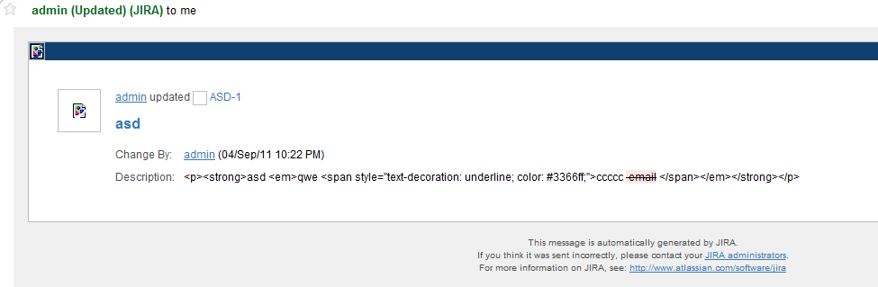
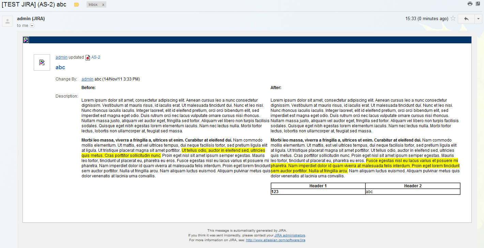
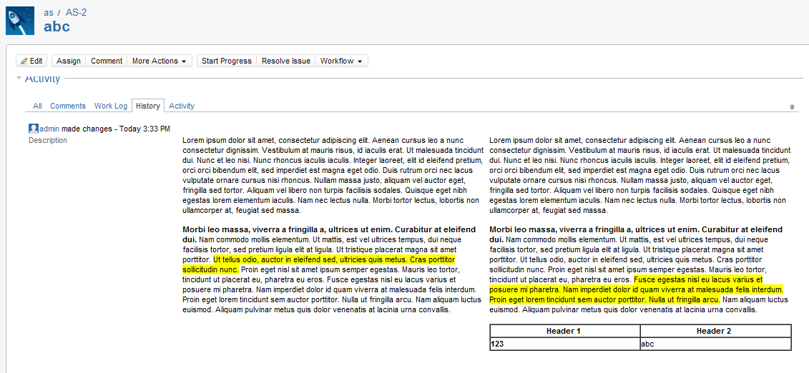

The plugin stores the formatted field as HTML. This raw value is usually renderered through the plugin before being displayed, however there are several parts of Jira that use the raw value directly, for example Email notifications and the Change History tab.
Investigation revealed that there is no way for the renderer to affect the display of the field in these circumstances, and this was confirmed via the query posted on Atlassian Answers. The solution is to modify the necessary velocity templates, which is described below.
The templates presented here are valid for Jira 4.4. and 5.0. They are only suggestions and can be modified to suite your requirements. Note that care must be taken when updating your Jira instance as these changes must be reapplied afterwards. Also, only html templates are shown. Plain text templates could probably be modified in a similar way.
Find the template in the following location :
<Jira Install Location>\atlassian-jira\WEB-INF\classes\templates\email\html\includes\fields\changelog.vm
Replace, or manually update, the template with the contents of this file: changelog.vm Note: Right Click and select download file, rather than copying from the browser as it contains html. This will result in an email notification as shown below:
Find the template in the following location :
<Jira Install Location>\atlassian-jira\WEB-INF\classes\templates\plugins\jira\issuetabpanels\changehistory.vm
Replace, or manually update, the template with the contents of this file: changehistory.vm Note: Right Click and select download file, rather than copying from the browser as it contains html. This will result in a history tab formatted as follows:
{kind=link}
{kind=link}
{kind=link}